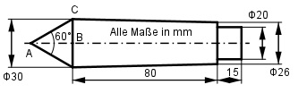

Aufgabe 279 Welches Volumen V hat die dargestellte Aufnahmespitze?

V = Kegel K + Kegelstumpf KS + Zylinder: Im Dreieck ABC gilt: ∠CAB = 60°/2 = 30° BC = 30 mm/2 = 15 mm BC tan 30° = ----- |*AB AB AB * tan 30° = BC |:tan 30° BC 15 mm AB = --------- = --------- = 26 mm tan 30° 0,5774 л * BC2 * AB л * 152 mm2 * 26 mm K = -------------- = ----------------------- = 3 3 = 6 123 mm3 r2 = 26 mm/2 = 13 mm л * h KS = -------- * (r12 + r1 * r2 + r22) 3 л * 80 KS = -------- * (152 + 15 * 13 + 132) cm3 3 л * 80 KS = -------- * (225 + 15 * 13 + 169) cm3 3 KS = 49 319 mm3 Z = л * r2 * h r = 20 mm/2 = 10 mm Z = л * 102 mm2 * 15 mm = 4 710 mm3 V = K + KS + Z = = 6 123 mm3 + 49 319 mm3 + 4 710 mm3 V = 60 152 mm3 = 60,15 cm3